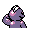

#066
Machop
Fighting
Loves to build its muscles. It trains in all styles of martial arts to become even stronger
Base stats Total 270
HP70
Attack80
Defense50
Speed35
Special35
Details
- Species
- Superpower
- Height
- 2'07"
- Weight
- 43.0 lb
- Catch rate
- 180
- Base exp
- 88
- Growth
- Medium Slow
Level-up moves
LevelMoveType
StartKarate ChopFighting
Lv 7LeerNormal
Lv 9TackleNormal
Lv 13Focus EnergyNormal
Lv 17Low KickFighting
Lv 25Seismic TossFighting
Lv 28Mach PunchFighting
Lv 37Cross ChopFighting
Lv 41Double-EdgeNormal
Lv 44Hi Jump KickFighting
Evolution
Where to find
TM / HM
TM01 Mega PunchTM05 Mega KickTM06 ToxicTM08 Body SlamTM09 Take DownTM10 Double-EdgeTM17 SubmissionTM18 CounterTM19 Seismic TossTM26 EarthquakeTM27 FissureTM28 DigTM31 MimicTM32 Double TeamTM34 BideTM35 MetronomeTM37 FlamethrowerTM38 Fire BlastTM44 RestTM48 Rock SlideTM50 SubstituteHM04 Strength